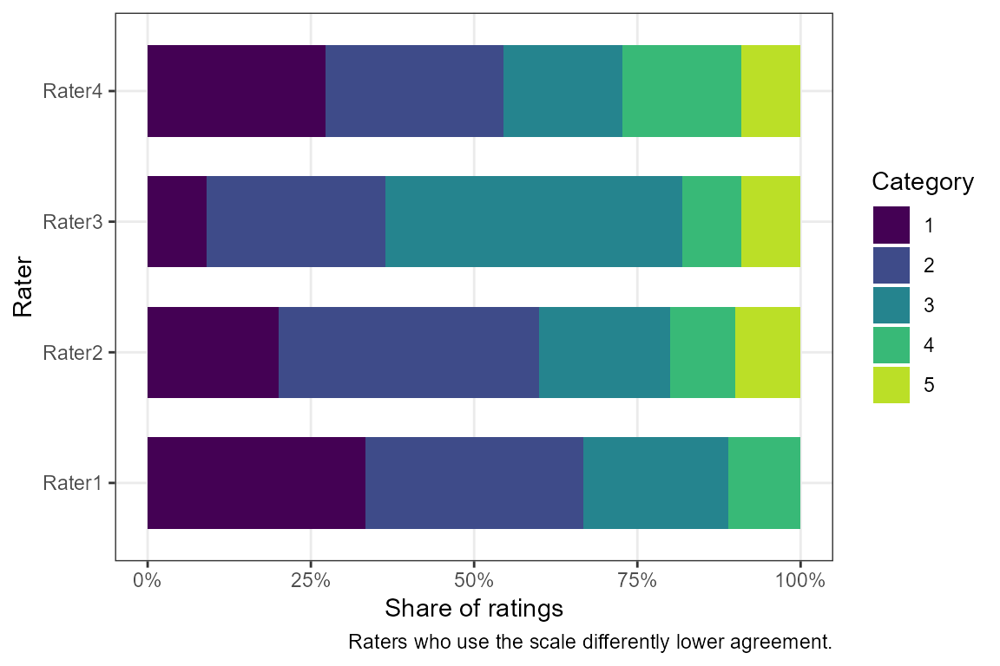
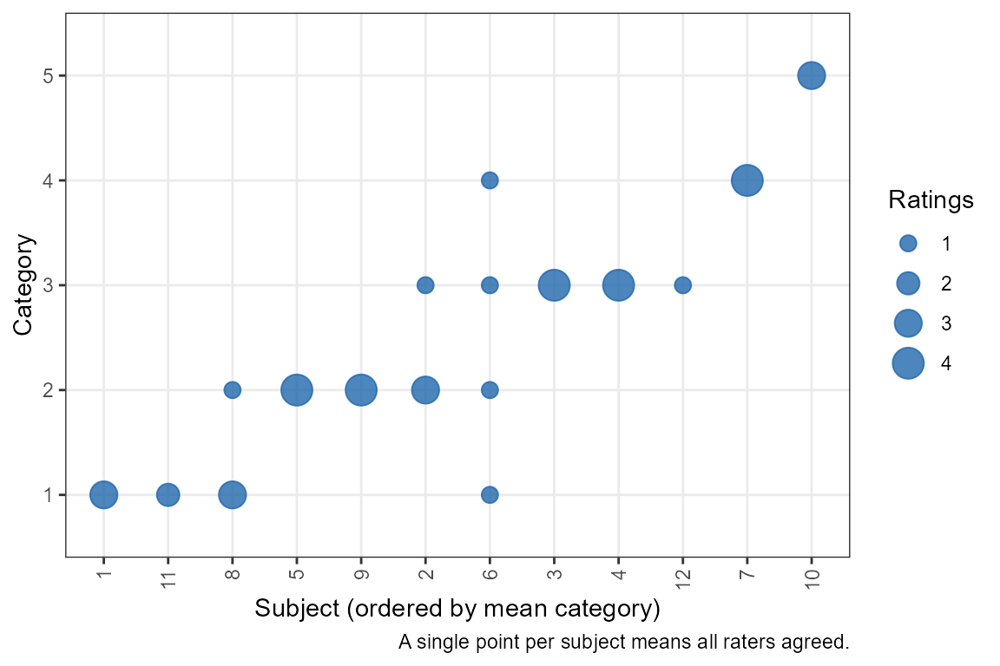
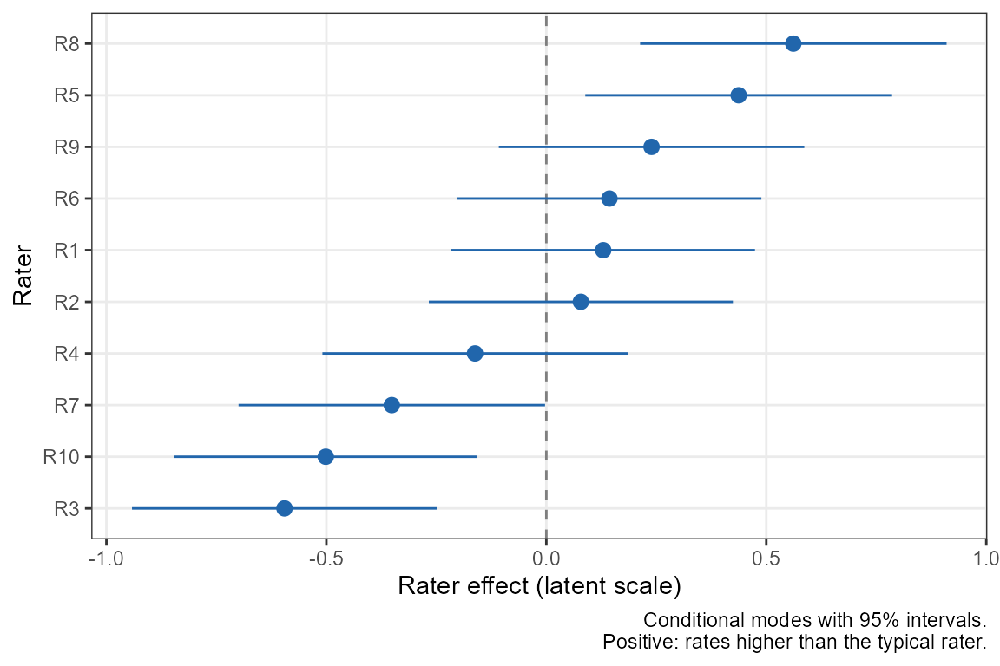
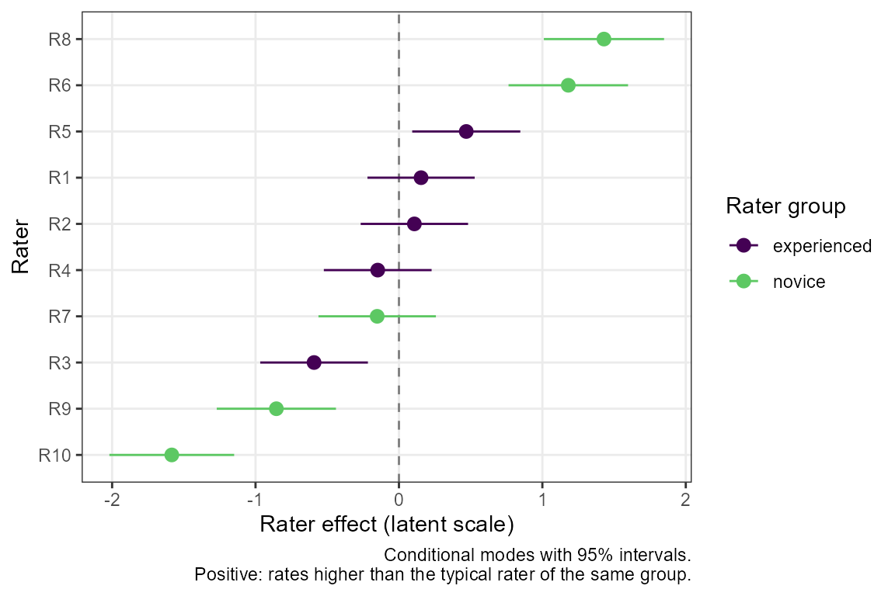

Agreement for Categorical and Ordinal Ratings
Aaron R. Caldwell
Last Updated: 2026-10-20
Source:vignettes/categorical_agreement.Rmd
categorical_agreement.RmdBackground
Many measurements are not numbers on a continuous scale but classifications: a diagnosis (present or absent), a grade (1 to 5), or a severity rating (none, mild, moderate, severe). When several raters classify the same subjects, the question is how often they agree. For continuous measurements, see instead the reliability analysis vignette (ICCs) and the agreement analysis vignette (limits of agreement).
SimplyAgree has two functions for categorical ratings.
Both return a standard htest object, with
summary() and plot() methods.
| Function | Estimates | Use when |
|---|---|---|
cac_test() |
Percent agreement, Gwet’s AC1/AC2, Fleiss’ kappa or Krippendorff’s alpha | Nominal or ordinal ratings, any number of raters |
ord_kappa_test() |
The model-based kappa of Nelson and Edwards (2015) | Ordinal ratings from many raters sampled from a population; comparing groups of raters or subjects |
The older agree_coef(), which reports four coefficients
in one table, is superseded by cac_test() (see Legacy function).
Both functions accept data in the same three ways as
icc_test(): a formula, rating ~ rater | id;
long data, with measure, item (the rater) and
id column names; or wide data, one row per subject, with
each rater’s column in col.names. Ratings may be numeric,
character or factor, and missing ratings are allowed.
Chance-corrected agreement coefficients
An example
Take the example of Gwet (2014): 12 subjects rated by 4 raters on a 5-point scale, with some ratings missing.
ratings <- data.frame(
Rater1 = c(1, 2, 3, 3, 2, 1, 4, 1, 2, NA, NA, NA),
Rater2 = c(1, 2, 3, 3, 2, 2, 4, 1, 2, 5, NA, NA),
Rater3 = c(NA, 3, 3, 3, 2, 3, 4, 2, 2, 5, 1, 3),
Rater4 = c(1, 2, 3, 3, 2, 4, 4, 1, 2, 5, 1, NA))
raters <- c("Rater1", "Rater2", "Rater3", "Rater4")The simplest summary is the percent agreement: the proportion of pairs of ratings of the same subject that agree.
cac_test(col.names = raters, data = ratings, coef = "pa")
#>
#> Percent agreement for 4 raters
#>
#> data: Rater1, Rater2, Rater3, Rater4
#>
#> alternative hypothesis: two.sided
#> 95 percent confidence interval:
#> 0.5417184 1.0000000
#> sample estimates:
#> percent agreement
#> 0.8181818Some of that agreement would happen by chance even if the raters guessed. The chance-corrected coefficients all take the form \[ \frac{p_a - p_e}{1 - p_e}, \] where \(p_a\) is the observed agreement and \(p_e\) the agreement expected by chance: 1 means perfect agreement and 0 means no more agreement than chance. The default coefficient is Gwet’s AC1 (Gwet 2008).
cac_test(col.names = raters, data = ratings)
#>
#> Gwet's AC1 for 4 raters
#>
#> data: Rater1, Rater2, Rater3, Rater4
#>
#> alternative hypothesis: two.sided
#> 95 percent confidence interval:
#> 0.4608133 1.0000000
#> sample estimates:
#> Gwet's AC1
#> 0.7754441The results of cac_test() match those of the irrCAC
package (Gwet
2019).
Choosing a coefficient
The coefficients differ in how they define chance agreement:
- Fleiss’ kappa (Fleiss 1971) and Krippendorff’s alpha (Krippendorff 1970) use the overall proportion of ratings in each category: chance agreement is the probability that two ratings drawn at random fall in the same category. Krippendorff’s alpha also includes a small-sample correction for the number of pairs of ratings.
- Gwet’s AC1 (Gwet 2008) uses the probability that a rater classifies a subject at random, which is small when raters mostly agree.
The difference matters when one category dominates. Here two readers classify 50 scans, nearly all of them normal, and disagree on only two.
screen <- data.frame(
reader1 = c(rep("normal", 45), "abnormal", "normal", "normal",
"abnormal", "normal"),
reader2 = c(rep("normal", 45), "normal", "abnormal", "normal",
"abnormal", "normal"))
readers <- c("reader1", "reader2")
sapply(c("pa", "gwet", "fleiss", "krippendorff"), function(coef) {
unname(cac_test(col.names = readers, data = screen,
coef = coef)$estimate)
})
#> pa gwet fleiss krippendorff
#> 0.9600000 0.9566724 0.4791667 0.4843750The readers agree on 96% of scans, yet Fleiss’ kappa is only 0.48, because with 94% of ratings normal, agreement by chance is already high. This is the well-known “kappa paradox” (Feinstein and Cicchetti 1990). Gwet’s AC1 stays close to the raw agreement. Neither answer is wrong: kappa asks how well the readers agree beyond the agreement expected from the prevalence, and with so few abnormal scans there is little information about that. Report the percent agreement alongside any chance-corrected coefficient, and the category proportions when they are very unequal.
Ordinal ratings and weights
With an ordered scale, a disagreement between 3 and 4 is less serious
than one between 1 and 4. weights gives partial credit to
near misses. The common choices are quadratic weights, which penalise a
disagreement by the square of its distance, and linear weights, which
penalise it in proportion to the distance (Gwet 2014). Weighted Gwet’s AC1 is called
AC2.
sapply(c("unweighted", "linear", "quadratic"), function(w) {
unname(cac_test(col.names = raters, data = ratings, weights = w)$estimate)
})
#> unweighted linear quadratic
#> 0.7754441 0.8587391 0.9140007Other schemes ("ordinal", "radical",
"ratio", "circular" and
"bipolar") and custom weight matrices are also available. A
custom matrix has one row and column per category, values between 0 and
1, and 1 on the diagonal. For example, to give half credit to adjacent
categories only:
The rating scale
Gwet’s AC1/AC2 and the weights depend on the full set of categories,
not just those that were used. By default the categories are the
observed ratings (or the levels of a factor). If the scale had a
category no rater used, list the full scale in
categories:
# a 6-point scale on which no subject was rated 6
cac_test(col.names = raters, data = ratings, weights = "quadratic",
categories = 1:6)$estimate
#> Gwet's AC2
#> 0.9474078
cac_test(col.names = raters, data = ratings, weights = "quadratic")$estimate
#> Gwet's AC2
#> 0.9140007Character ratings are ordered alphabetically, which is rarely what an
ordinal scale needs. For ordinal labels, use a factor with the levels in
order (unused levels are kept as categories), or give
categories.
severity <- c("none", "mild", "moderate", "severe", "extreme")
ratings_f <- as.data.frame(lapply(ratings, function(x)
factor(severity[x], levels = severity)))
cac_test(col.names = raters, data = ratings_f,
weights = "quadratic")$estimate
#> Gwet's AC2
#> 0.9140007Testing and describing the result
To claim that agreement exceeds a threshold, test against it with
null.value. The interval and t test use the standard error
of Gwet (2008), which treats the subjects as a
random sample and the raters as fixed.
res <- cac_test(col.names = raters, data = ratings, coef = "fleiss",
weights = "quadratic", null.value = 0.6,
alternative = "greater")
res
#>
#> Weighted (quadratic) Fleiss' kappa for 4 raters
#>
#> data: Rater1, Rater2, Rater3, Rater4
#> t = 1.8142, df = 11, p-value = 0.04849
#> alternative hypothesis: true Fleiss' kappa is greater than 0.6
#> 95 percent confidence interval:
#> 0.6026755 1.0000000
#> sample estimates:
#> Fleiss' kappa
#> 0.8649351summary() describes the result in words, either as a
test decision (style = "hypothesis") or as a compatibility
interval with an S-value (style = "estimation").
summary(res)
#> The test is statistically significant (t(11) = 1.81, p = 0.048; Fleiss'
#> kappa = 0.865, 95% lower bound 0.603) at the 0.05 alpha level. The null
#> hypothesis can be rejected: at the desired error rate, it can be stated
#> that the true Fleiss' kappa is greater than 0.6. The estimate is
#> Fleiss' kappa: agreement corrected for chance agreement from the
#> overall category proportions (observed agreement 0.975, chance
#> agreement 0.818). Partial agreement between categories was credited
#> with quadratic weights. The data had 12 subjects, of whom 1 had a
#> single rating, rated by 4 raters (41 ratings) in 5 categories. The
#> interval and t test use the standard error of Gwet (2008), which treats
#> the subjects as a random sample and the raters as fixed, with 11
#> degrees of freedom.No qualitative labels (such as “substantial” or “almost perfect”) are given: they are arbitrary and depend on the coefficient.
plot() shows how each rater used the scale, which
reveals raters who are systematically more lenient or severe, or (with
type = "subjects") the ratings of each subject.
plot(res)
plot(res, type = "subjects")
Model-based kappa for many raters
When to use it
The coefficients above treat the raters in the study as fixed. In large agreement studies (for example, many radiologists each reading the same set of mammograms), the raters are a sample from a population of raters, and the question is how well raters in general agree. Nelson and Edwards (2015) and Nelson et al. (2017) proposed a model-based kappa, \(\kappa_m\), for this setting.
It fits an ordinal (cumulative probit) mixed model in which the rating of subject \(i\) by rater \(j\) depends on a latent variable with a subject effect \(u_i \sim N(0, \sigma^2_u)\) and a rater effect \(v_j \sim N(0, \sigma^2_v)\): \[ P(Y_{ij} \le c \mid u_i, v_j) = \Phi(\alpha_c - u_i - v_j). \] \(\kappa_m\) is the chance-corrected probability that two raters from the population put a subject from the population in the same category. It depends only on the number of categories and on \(\rho = \sigma^2_u / (\sigma^2_u + \sigma^2_v + 1)\), the share of the latent variance due to real differences between subjects. Because the thresholds \(\alpha_c\) drop out, \(\kappa_m\) is not affected by how common each category is, so it avoids the kappa paradox above.
ord_kappa_test() requires the ordinal package, which
fits the model by the Laplace approximation. At least 3 raters are
needed to estimate the rater variance, and preferably many more; with
few raters, use cac_test().
An example
As an example, simulate 60 subjects rated by 10 raters on a 5-point scale.
set.seed(2017)
d <- expand.grid(id = 1:60, rater = paste0("R", 1:10))
latent <- rnorm(60, sd = 1.5)[d$id] + rnorm(10, sd = 0.5)[d$rater] +
rnorm(nrow(d))
d$rating <- cut(latent, c(-Inf, -1.5, -0.5, 0.5, 1.5, Inf), labels = FALSE)
res_km <- ord_kappa_test(rating ~ rater | id, data = d)
res_km
#>
#> Model-based kappa (ordinal probit GLMM) for 10 raters and 5 categories
#>
#> data: rating ~ rater | id
#>
#> alternative hypothesis: two.sided
#> 95 percent confidence interval:
#> 0.2073107 0.3290732
#> sample estimates:
#> kappa_m
#> 0.2650766The interval is formed on the logit of \(\rho\), so it stays between 0 and 1. A test
against a threshold works as before, with null.value. The
fitted model and its variance components are in fit:
res_km$fit[c("sigma2_subject", "sigma2_rater", "rho", "p0")]
#> $sigma2_subject
#> [1] 2.953053
#>
#> $sigma2_rater
#> [1] 0.171657
#>
#> $rho
#> [1] 0.715942
#>
#> $p0
#> [1] 0.4208256p0 is the observed agreement at the fitted thresholds,
before the correction for chance.
For comparison, Fleiss’ kappa for the same data:
cac_test(rating ~ rater | id, data = d, coef = "fleiss")$estimate
#> Fleiss' kappa
#> 0.276016Individual raters
The model also estimates each rater’s effect (its conditional mode): how much higher or lower the rater tends to rate than the typical rater. Raters far from zero are lenient or severe relative to the others.
plot(res_km, type = "effects")
Comparing groups of raters or subjects
Do experienced raters agree better than inexperienced ones? Do raters
agree better on older patients’ scans? With group,
ord_kappa_test() fits the model of Nelson et al. (2017) with the group as a fixed effect
and a separate rater (or subject) variance in each group, and compares
the groups. Here the last five raters are made more variable.
d$experience <- ifelse(d$rater %in% paste0("R", 1:5), "experienced",
"novice")
novice <- d$experience == "novice"
d$rating2 <- cut(latent + novice * rnorm(10, sd = 1)[d$rater],
c(-Inf, -1.5, -0.5, 0.5, 1.5, Inf), labels = FALSE)
res_g <- ord_kappa_test(rating2 ~ rater | id, data = d,
group = "experience")
res_g
#>
#> Model-based kappa by rater group (experience): likelihood ratio test of
#> a group-specific rater variance
#>
#> data: rating2 ~ rater | id, rater group: experience
#> LRT = 4.3937, p-value = 0.03607
#> alternative hypothesis: true difference in kappa_m is not equal to 0
#> 95 percent confidence interval:
#> -0.190612777 -0.003347343
#> sample estimates:
#> kappa_m (experienced) kappa_m (novice)
#> 0.2823913 0.1854113The estimates are \(\kappa_m\) in
each group, the interval is for their difference, and the p-value is
from a likelihood ratio test of equal rater variances in the two groups.
fit$subgroups also gives \(\kappa_m\) between a rater from each
group:
res_g$fit$subgroups
#> subgroup kappa_m se lower upper
#> 1 experienced 0.2823913 0.03379467 0.2210622 0.3530238
#> 2 novice 0.1854113 0.05032477 0.1059144 0.3042706
#> 3 experienced vs novice 0.2201790 0.04262563 0.1478964 0.3147403
summary(res_g)
#> The likelihood ratio test is statistically significant (LRT = 4.39, p =
#> 0.036) at the 0.05 alpha level: it can be stated that agreement differs
#> between the rater groups (experience; null hypothesis: the rater
#> variance is the same in both groups, so the group kappas are equal). In
#> this model, kappa_m was 0.282 (95% CI [0.221, 0.353]) for raters in
#> group experienced and 0.185 (95% CI [0.106, 0.304]) in group novice;
#> the difference (novice minus experienced) was -0.0970 (95% CI [-0.191,
#> -0.00335]). Between a rater from each group, kappa_m was 0.220. The
#> model-based kappa (Nelson, Mitani & Edwards, 2017) was estimated from a
#> cumulative probit mixed model with the group as a fixed effect and a
#> separate rater variance in each group: a subject variance of 3.32 and
#> rater variances of 0.165 and 1.43 in groups experienced and novice. The
#> data had 60 subjects and 10 raters (600 ratings). The likelihood ratio
#> test compares this model with one with a common rater variance
#> (chi-square, 1 df); intervals use delta-method standard errors and are
#> approximate.
plot(res_g, type = "effects")
For a subject characteristic, such as patient age, use
group_type = "subject"; the group must then be constant
within each subject (and, for rater groups, within each rater).
Nelson et al. (2017) add a random slope for the group
indicator and test its variance and correlation against a mixture of
chi-square distributions. Because the group is constant within each
rater (or subject), the intercept-slope covariance of that model is not
identified, so ord_kappa_test() fits the equivalent model
with one variance per group, which has the same likelihood and the same
kappas, and compares the likelihood ratio statistic with a chi-square
distribution with 1 df. In simulations with equal variances (60
subjects, 16 raters), its type I error was 0.044 at the 0.05 level.
Legacy function
agree_coef() reports all four coefficients of
cac_test() in one table, without a test. It is superseded
but still works:
agree_coef(data = ratings, wide = TRUE, col.names = raters,
weighted = TRUE)
#> est se lower.ci upper.ci
#> Percent Agreement 0.9753788 0.09061628 0.7759337 1
#> Gwet's AC2 0.9140007 0.10396224 0.6851814 1
#> Fleiss' Kappa 0.8649351 0.14603361 0.5435173 1
#> Krippendorff's Alpha 0.8491071 0.12905120 0.5615632 1